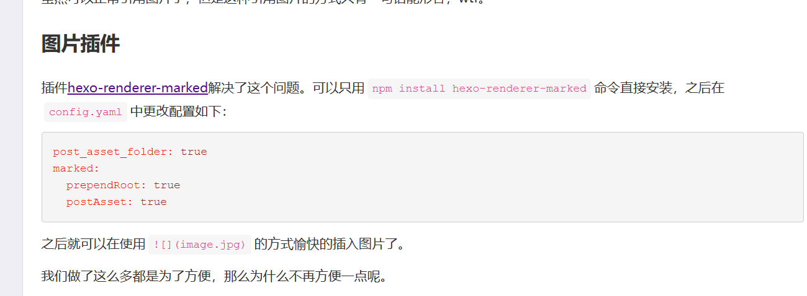

第一个文章——搭建博客一二事
这是第一篇文章——搭建博客一二事
记录搭建博客的一些 小问题
前言：
由于好吃懒做，博客环境配置和你现在看到这篇文章已经间隔了很久，对于我这样一个没有什么经验的小白来说，最后配好环境经历了一个十分痛苦的晚上——由于我之前的乱搭！所以如果读到这里也想配置一个博客的兄弟，记得一鼓作气把博客配好，不要后面不记得自己做了什么而追悔莫及！
首先我要推荐几个我看了的非常实用的网站，其次我会列出我踩过的一些坑。
- Hexo+Github初始博客配置：
- B站小白向手把手教学（强烈推荐，搭配上面第一个教程使用）
- butterfly主题官方文档（详细的主题解释，学会看文档很重要捏😊）
- Markdown语法官方文档（别怕，看完真的不需要多久！）
一些坑坑坑！希望你不会碰到
1.输入’hexo d’ 指令上传代码出现如下类似报错
fatal: unable to access 'https://github.com/a956551943/a956551943.github.io/': Encountered end of file |
改用ssh密钥配置github，使用ssh链接与远程仓库建立连接，网上教程很多
2.使用ssh后 检查ssh连接情况，发现被端口22拒绝
改用443端口连接 教程网上有
3.记得hexo d是用了hexo的插件push到你在 _config.yml 文件中的repo地址，你应该在根目录下使用 git init 并建立private仓库存储你的文件，以防源码丢失
重要：不使用图床就把图片上传至博客的方法，非常简洁！！！

我的版本中，在 _config.yml 只更改了如下一行
post asset folder: true |
特别鸣谢：@老陈醋/冠 https://charliechen114514.github.io/
给予极大的技术帮助！！！
本博客所有文章除特别声明外，均采用 CC BY-NC-SA 4.0 许可协议。转载请注明来自 Clouduoの博客！